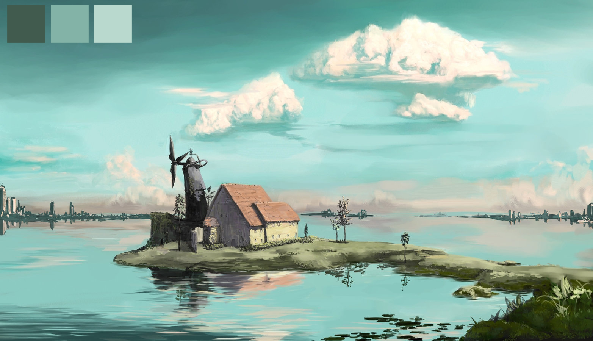

A linux script to detect the most dominant colours in a wallpaper and change the theme (terminal, vim etc.) colours to match the wallpaper. Written in C and ported to Java.

K-Means Clustering and Lloyd's Algorithm
K-Means is a cluster analysis technique for exploring a dataset. In Wallpaper to Theme the dataset is comprised of every pixel's RGB value. After the clusters have been formed, the center of the clusters will show the most dominant colours in the image.
How it Works:
Say we have a 100px*100px image. From this image we can get the RBG value of each pixel. This will give us 10,000 3 Dimensional points.
Now we choose our 3 initial cluster centroids. (For simplicity our initial points can be the RGB values for Red, Green and Blue)
Go through each pixel and assign it to it's nearest cluster centroid.
Now go through each cluster and recalculate it's new centroid based on the pixels assigned to it.
Keep reassigning the pixels and recalculating the centroids until the dominant colours have been found.